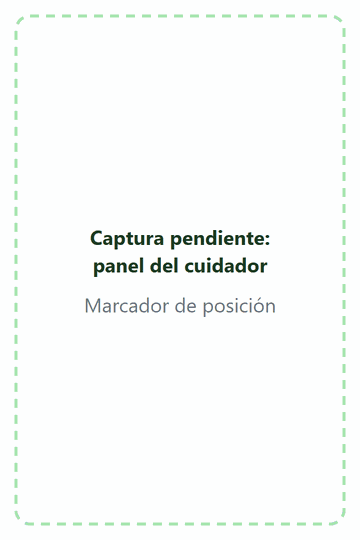
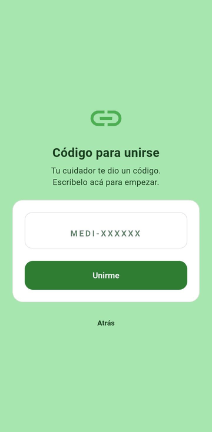
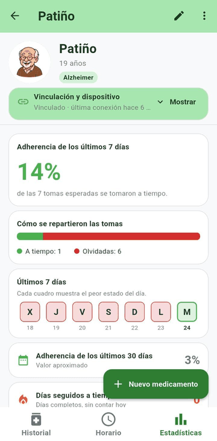
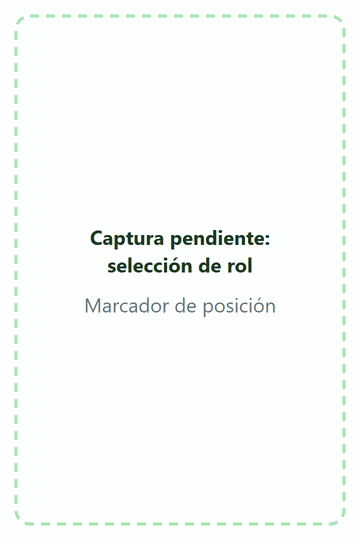
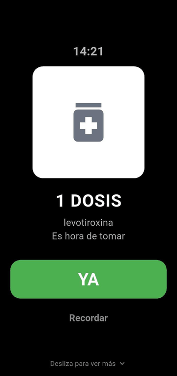

Para el cuidador
Agrega pacientes, crea tratamientos, comparte el código y revisa el historial, el horario y las estadísticas de cada persona que cuida. También puede editar la ficha y llamar al contacto de emergencia desde el detalle.
Pastillero familiar
Una app para que el cuidador organice los medicamentos y el paciente reciba alarmas claras para tomar sus dosis.
El cuidador arma el plan; el paciente solo tiene que confirmar cuando suena la alarma.

MediPlan es un pastillero familiar. El cuidador crea la ficha del paciente, carga sus tratamientos y define los horarios. El paciente recibe una alarma en su celular y confirma cada toma con un toque.
La app separa dos roles. El cuidador entra con una cuenta. El paciente no tiene cuenta: se vincula una sola vez con un código y queda asociado a ese teléfono.
Agrega pacientes, crea tratamientos, comparte el código y revisa el historial, el horario y las estadísticas de cada persona que cuida. También puede editar la ficha y llamar al contacto de emergencia desde el detalle.
Ve sus medicamentos del día, recibe alarmas y confirma con “YA”. También puede posponer con “Recordar” si necesita unos minutos más, y llamar al contacto de emergencia desde el final de su horario.
Agrega el nombre, el medicamento, la dosis y los días de la semana en que corresponde cada toma.
Elige “Paciente” y escribe el código MEDI-XXXXXX una sola vez. Los códigos nuevos vencen a las 72 horas; si vence, el cuidador puede generar otro. La app recuerda el vínculo en ese teléfono.
Pulsa “YA” cuando ya tomó la dosis. Si necesita esperar, pulsa “Recordar” y la alarma vuelve en 5 minutos.
En la app, el rol del cuidador se llama “Doctor”. No hace falta ser médico: la cuenta es para quien organiza los medicamentos y acompaña al paciente.
MEDI-XXXXXX y lo muestra en la tarjeta “Código para unirse”.La edición solo actualiza los datos de la ficha. No cambia el código de vinculación, el cuidador ni el dispositivo vinculado.
Importante: la app programa una alarma por cada combinación de hora y día. Si dejas un horario sin días marcados, el editor marca todos los días para no guardar un horario vacío.
Los códigos nuevos vencen a las 72 horas. La tarjeta muestra la fecha y la hora (“Vence el DD/MM a las HH:MM”), “Código vencido” o “Sin vencimiento” cuando el vínculo es antiguo y no tiene fecha. Un código vencido no sirve para vincular un teléfono nuevo.

Si el paciente no alcanzó a vincularse y el código venció, puedes generar otro. El botón “Generar código nuevo” aparece en la tarjeta cuando el dispositivo está sin vincular.
Si el dispositivo ya está vinculado, la tarjeta indica que primero hay que desvincularlo. No se puede generar un código nuevo para un paciente que ya tiene un teléfono asociado sin liberar ese vínculo.
La ficha del paciente tiene tres pestañas en la barra inferior. La app abre en “Horario”.

Si un tratamiento lleva 5 días programados sin ninguna toma confirmada, el cuidador recibe una alerta. También aparece una tarjeta de aviso con el texto “5 días sin tomas” en el detalle del paciente.
Ojo: si el paciente nunca abre la app, el aviso push puede no salir. La tarjeta del cuidador sí se calcula al abrir el detalle del paciente.
En la ficha del detalle, junto al contacto de emergencia, aparecen los botones “Llamar” y “Copiar” cuando el teléfono guardado es válido.
El paciente no puede desvincularse solo: esa acción la hace el cuidador.
Cuando la app detecta que las lecturas llevan un rato viniendo de la memoria local, muestra el aviso “Sin conexión. Puede que estés viendo datos desactualizados.” en el panel y en el detalle del paciente. El aviso desaparece cuando vuelve la conexión.
Las alarmas ya programadas siguen funcionando. Los cambios que dependan de Firestore pueden tardar en sincronizarse hasta que vuelva la conexión.
En la pantalla inicial, el botón “Paciente” tiene la descripción “Tomo mis medicinas”. Ese es el camino del paciente.
El cuidador puede editar tu ficha (nombre, edad, condición, contacto de emergencia y foto). Cuando lo haga, verás los datos nuevos la próxima vez que la app cargue la ficha.

MEDI-XXXXXX y pulsa “Unirme”.Los códigos nuevos vencen a las 72 horas. El cuidador puede usar “Generar código nuevo” en la tarjeta del paciente cuando el dispositivo está sin vincular. Si ya estabas vinculado en este mismo teléfono, la tarjeta de reingreso te devuelve sin escribir el código, aunque el código haya vencido.
Después de vincularse, la app recuerda el vínculo. Al volver a abrirla verás la tarjeta para entrar como ese paciente (“Continuar como paciente” o “Entrar como nombre”) y el enlace “Usar otro código”.
Cuando llega la hora, la app muestra la foto del medicamento si la cargaste, la dosis y el nombre. También intenta abrirse a pantalla completa.
Pantalla completa: si el celular está desbloqueado y en uso, Android puede mostrar un aviso en lugar de abrir la alarma a pantalla completa. La alarma sigue estando; toca el aviso para abrirla.

La alarma principal se repite cada semana en los días que marcó el cuidador.
La alarma tiene una pista que dice “Desliza para ver más”. Al bajar encuentras:
Al final de la pestaña “Horario”, si el cuidador guardó un teléfono de emergencia válido, aparece una tarjeta discreta con el título “¿Necesitas ayuda?”.
Cuando la app detecta que las lecturas llevan un rato viniendo de la memoria local, muestra “Sin conexión. Tus alarmas siguen funcionando.” en la pestaña “Horario”. El aviso desaparece cuando vuelve la conexión.
Las alarmas ya programadas siguen funcionando sin internet. Los datos que se muestran pueden estar desactualizados hasta que vuelva la conexión.
Las alarmas se programan en el teléfono. Si Android las bloquea, la toma no suena. Revisa estos puntos, sobre todo la primera vez.
Cuando abras la app, Android puede pedir permiso para mostrar notificaciones. Acepta. Si lo rechazaste, entra a Ajustes del teléfono, busca MediPlan y activa las notificaciones. Sin este permiso no se ven las alarmas.
En Ajustes, busca MediPlan y entra a “Alarmas y recordatorios” o “Alarmas exactas”. Si el teléfono muestra esa opción, déjala activa. El nombre cambia según la marca y la versión de Android.
La alarma sube el brillo de la pantalla al máximo. La primera vez, Android abre la pantalla “Modificar las configuraciones del sistema”. Activa MediPlan ahí. Si no lo haces, la alarma sigue sonando, pero sin el brillo extra.
El ahorro de batería puede retrasar o cortar las alarmas. Busca MediPlan en los ajustes de batería y elige “Sin restricciones” o “No optimizar”.
Evita “Forzar detención” sobre MediPlan: cancela las alarmas programadas. Si el teléfono está en “No molestar” o en silencio, el sonido puede no escucharse.
Celular desbloqueado y en uso: Android puede mostrar un aviso en lugar de abrir la pantalla completa de la alarma. Es normal. La alarma sigue activa y se abre al tocar el aviso.
Los códigos nuevos se guardan con una fecha de vencimiento de 72 horas. Pasado ese tiempo no sirven para vincular un teléfono nuevo. Pide al cuidador que genere uno nuevo. Si el paciente ya estaba vinculado en ese mismo teléfono, la tarjeta de reingreso lo devuelve sin escribir el código.
El cuidador abre el detalle del paciente y pulsa el lápiz “Editar”. Puede cambiar el nombre, la edad, la condición médica, el contacto de emergencia y la foto, y luego pulsa “Guardar cambios”. La app solo actualiza esos datos de la ficha.
Las alarmas ya programadas siguen funcionando. La app muestra un aviso “Sin conexión” cuando los datos llevan un rato viniendo de la memoria local. Para que el cuidador vea una confirmación, hace falta que vuelva la conexión y se sincronice el registro.
El cuidador puede usar “Llamar” junto al contacto en el detalle del paciente. El paciente lo encuentra al final de su pestaña “Horario”, en la tarjeta “¿Necesitas ayuda?”. El botón abre el marcador del teléfono; la llamada se confirma allí.
El cuidador puede pulsar “Desvincular dispositivo” en el detalle del paciente. Cuando el teléfono vuelve a conectarse, la app detecta que ya no está vinculado y deja de mostrar los datos del paciente. MediPlan no puede borrar datos ya descargados ni cancelar alarmas ya programadas en un teléfono que está apagado o sin conexión.
La app no define un número máximo de pacientes. La lista de “Mis pacientes” no aplica un límite explícito en el código. El límite práctico depende del rendimiento del teléfono, del tamaño de los datos y de los límites del servicio de Firebase.
El cuidador debe pulsar “Desvincular dispositivo” en el detalle del paciente. Después instalas la app en el teléfono nuevo, eliges “Paciente” y escribes el mismo código, o el cuidador genera uno nuevo si el anterior venció.
Porque ese código ya está asociado a otro teléfono. Pide al cuidador que lo desvincule y vuelve a intentarlo. El mensaje completo es: “Este código ya está vinculado a otro dispositivo. Pide al cuidador que lo desvincule.”
En la pantalla inicial pulsa “Usar otro código” y escribe el código del nuevo paciente. La app muestra el último paciente vinculado en ese teléfono. Si vas a usar el paciente anterior en otro celular, el cuidador debe desvincularlo primero.
No. El paciente entra como usuario anónimo y se identifica con el código que le da el cuidador. No tiene correo ni contraseña.
La app lo marca “Finalizado” y cancela sus alarmas. El historial de tomas anteriores se conserva. Si el tratamiento es “Continuo”, no se finaliza solo.
Revisa, en este orden: el permiso de notificaciones, las alarmas exactas, el ahorro de batería y el modo “No molestar”. También confirma que el día de hoy esté marcado en el horario y que el tratamiento no esté finalizado. Si el teléfono estaba apagado a esa hora, la alarma no suena.
El cuidador ve los pacientes que creó. El paciente ve los datos del paciente al que está vinculado. Otros cuidadores no pueden leer el perfil, los tratamientos ni las tomas de un paciente ajeno. El índice de códigos (código e identificador del paciente) se puede obtener por código desde una sesión autenticada, pero no se puede listar y no contiene datos clínicos. La app no tiene un panel de administración.
No. Esta versión funciona en Android. No hay una versión para iOS.
No. MediPlan organiza recordatorios y registros. No diagnostica, no ajusta dosis y no reemplaza la indicación de un médico.
Esta es una versión académica. Antes de usar datos reales hay que completar la política de privacidad, revisar la seguridad con el docente y definir un procedimiento de acceso, corrección y borrado.
La app es un cliente Flutter para Android. No hay Cloud Functions ni Firebase Storage: la lógica y las lecturas viven en el teléfono, y la seguridad se apoya en Firebase Auth y en las reglas de Firestore.
En palabras: el teléfono del cuidador y el del paciente ejecutan la misma app Flutter. Firebase Auth resuelve una cuenta con correo o Google para el cuidador y una sesión anónima para el paciente. Cloud Firestore guarda cuatro colecciones principales —usuarios, pacientes, tratamientos y registrosToma— y el índice vinculos. El teléfono del paciente programa notificaciones locales y una alarma tipo despertador. La única llamada a un servicio externo de mensajería es el push FCM que el teléfono del paciente envía al cuidador para la alerta de 5 días sin tomas. No hay Cloud Functions ni Firebase Storage; las fotos se guardan como texto base64 dentro de Firestore.
Esta sección describe lo que el código permite y lo que guarda. No promete cifrado propio, auditoría ni garantías que no estén implementadas. La política de tratamiento de datos ampliada es un borrador aparte.
dispositivoVinculadoId al vincularse, sus propios registrosToma y el campo ultimoAvisoSinTomas de un tratamiento. No puede editar la ficha, crear tratamientos ni desvincularse.vinculos: cualquier sesión autenticada puede obtener un código por su ID, porque el paciente anónimo lo necesita para resolverlo. No se puede listar la colección completa. Crear, actualizar y borrar exige ser el cuidador del paciente.El paciente no tiene correo ni contraseña. Su UID anónimo de Firebase Auth queda guardado en pacientes/{id}.dispositivoVinculadoId. La vinculación solo se permite si el campo está libre y el código está vigente. Un mismo código no puede quedar asociado a dos teléfonos: si el campo ya está ocupado, la regla rechaza la escritura. El cuidador puede liberar el campo con “Desvincular dispositivo”.
Los vínculos nuevos guardan expiraEn con 72 horas de vigencia. La comprobación del cliente y la regla de Firestore usan el mismo límite: el código deja de servir en el instante de vencimiento. Los vínculos antiguos sin expiraEn se siguen aceptando por compatibilidad. El reingreso del mismo dispositivo ya vinculado no depende del vencimiento.
El paciente solo puede cambiar el campo dispositivoVinculadoId durante la vinculación, crear sus propios registrosToma y actualizar ultimoAvisoSinTomas. Las reglas no le permiten modificar el nombre, la edad, la condición, el contacto, la foto, el código, los horarios ni los datos del cuidador.
Las fotos de pacientes y medicamentos se guardan como texto base64 dentro del documento de Firestore. No se usa Firebase Storage. El código comprime las imágenes antes de guardarlas, pero el documento completo —incluida la foto— se descarga cuando la app lee la ficha o la lista de pacientes.
MediPlan no es un dispositivo médico. No diagnostica, no ajusta dosis y no reemplaza la indicación de un médico. Si hay una duda sobre un tratamiento, consulta con un profesional de la salud.
assets/secrets/fcm_service_account.json). Es extraíble. El rol debería limitarse a cloudmessaging.messages.create; la solución real es un backend que firme y envíe el push.Versión actual: 1.0.0+1. Es la versión visible en “Acerca de” y la que está definida en lib/constants.dart.
MEDI-XXXXXX, con vencimiento de 72 horas y opción “Generar código nuevo”.En algunos fabricantes hay que activar manualmente el sonido y la ejecución en segundo plano para que las alarmas suenen.
Proyecto académico de la UTS.
Equipo: David Steven Patiño Rueda
Contacto: dspatino@uts.edu.co
Hecho con Flutter y Firebase.
Los datos de contacto del proyecto ya están definidos.
Esta página no usa cookies, analíticas ni recursos externos. Las fuentes son las del sistema.